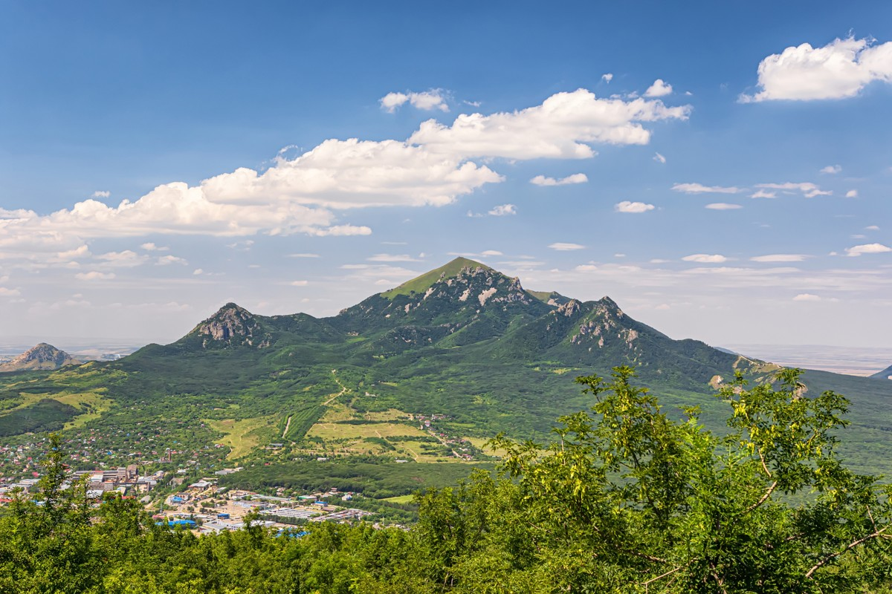

| Beshtau |
|  |
The highest mountain in the Pyatigorsk area
-
Beshtau is a 1401 m. high mountain situated near Pyatigorsk, in the North Caucasus, Russia.
-
It ia an isolated five-domed igneous mountain.
-
There is some evidence of eruptions in distant past, so it is actually a volcano.
-
The slopes are forested with ash, oak, hornbeam, and beech deciduous forests, and the summit is treeless.
-
Beshtau used to have uranium mines, which were closed in 1975.